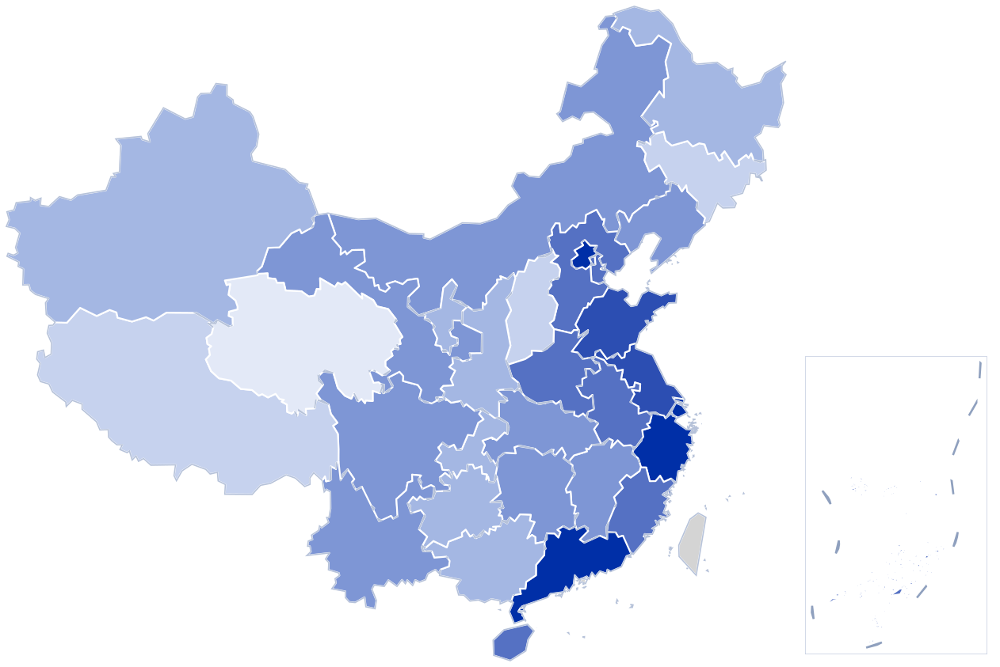

301 调查与中国企业 OFDI 实证研究
基于中国海关出口企业匹配面板数据，用多期双重差分法识别美国 301 调查 对企业对外直接投资的影响，覆盖基准回归、平行趋势检验、稳健性检验、 机制分析与异质性分析。
多期 DID · 事件研究法 · Stata个人主页 · Personal Homepage
分省 OFDI 存量 2024 年末 · 亿美元

对外非金融类直接投资存量，对数刻度分 7 档。灰色为无数据（港澳台）。右侧方框为南海诸岛及九段线，比例尺独立。数据源：《2024 年度中国对外直接投资统计公报》附表 6。
基于中国海关出口企业匹配面板数据，用多期双重差分法识别美国 301 调查 对企业对外直接投资的影响，覆盖基准回归、平行趋势检验、稳健性检验、 机制分析与异质性分析。
多期 DID · 事件研究法 · Stata